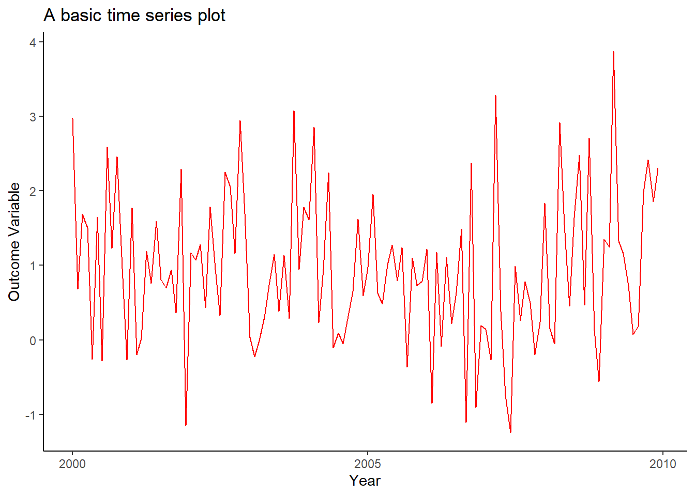

- Preamble
- Preliminaries
- 1 Introduction to Forecasting
- 2 Stochastic Process and Time Series
- 3 Forecasting Methods and Routines
- Deterministic Time Series Models
- 4 Trends
- Deterministic Time Series Models
- 5 Seasonality
- Dynamic Time Series Models
- 6 Linear Autoregression
- 7 Vector Autoregression
- 8 Threshold Autoregression
- Forecast Assessment
- 9 Forecast Evaluation
- 10 Forecast Combination
- Introduction to R
- Tutorial 1
- Tutorial 2
- Tutorial 3
- Tutorial 4
- Tutorial 5
- Tutorial 6
- Tutorial 7
- Tutorial 8
- Tutorial 9
Data Visualisation
One of the comparative advantages of R is in its graphing aesthetics. Currently, the best graphs are plotted via the ggplot2 package. Notably, this package requires that the data are maintained in the data.frame or the data.table format (for the latter, you need to load the data.table package). Let’s create a data.table object and observe its few lines:
set.seed(1)
x <- runif(120,0,2)
y <- 0.2+0.7*x+rnorm(120)
library(data.table)
dt <- data.table(y=y,x=x)
dt## y x
## 1: 2.9733299 0.53101733
## 2: 0.6817335 0.74424780
## 3: 1.6917341 1.14570673
## 4: 1.4994931 1.81641558
## 5: -0.2609185 0.40336386
## ---
## 116: 0.1835826 0.02615515
## 117: 1.9894321 1.43113213
## 118: 2.4197029 0.20636847
## 119: 1.8521905 0.89256870
## 120: 2.3040499 1.28020209Now, let’s load ggplot2 and generate a simple scatter plot:
library(ggplot2)
ggplot(dt,aes(x=x,y=y))+
geom_point()
We can augment this plot in a number of different ways. Here we change the point color to red, add the fitted regression line to the plot, add labels to the figure, and apply a ‘classic’ background theme:
ggplot(dt,aes(x=x,y=y))+
geom_point(color="goldenrod")+
geom_smooth(method="lm",formula=y~x,se=F,color="darkgray")+
labs(title="A scatterplot with fitted regression line",
x="Treatment Variable",
y="Outcome Variable",
caption="Caption: in case if needed.")+
theme_classic()
As another example, let’s generate a histogram (of the dependent variable):
ggplot(dt,aes(x=y))+
geom_histogram(color="white",fill="goldenrod",binwidth=.5)+
labs(title="A basic histogram")+
theme_classic()
We typically apply a line plot to illustrate a time series (that are ordered by date). In what follows, we add a date column to our data frame and then plot the dependent variable in the chronological order:
dt$date <- seq(from=as.Date("2000-01-01"),by="month",along.with=y)
ggplot(dt,aes(x=date,y=y))+
geom_line(color="goldenrod")+
labs(title="A basic time series plot",
x="Year",
y="Outcome Variable")+
theme_classic()